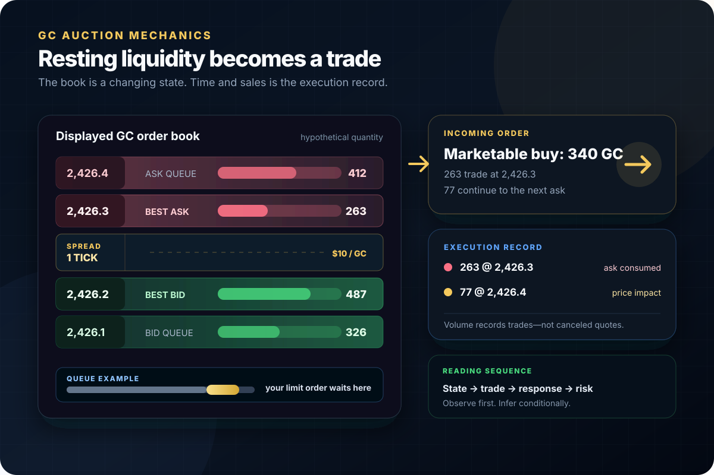

Gold futures market mechanics
GC Market Microstructure: How Gold Futures Actually Trade
GC is not a chart pattern with a personality. It is a standardized contract trading through a live auction. Price changes when executable orders meet the quantity available in the book. The useful questions are therefore mechanical: which contract is active, what is displayed, what actually traded, how did price respond, and what will the next order cost?

The governing idea
Microstructure Explains the Auction, Not the Next Direction
Market microstructure is the machinery: the contract rules, venue, price grid, order types, priority rules, displayed book, trade matching, clearing, settlement, and behavior of liquidity through time. It can explain why execution becomes expensive or why a fast order consumes several prices.
It cannot turn a large bid, a delta spike, or a sweep of a prior high into certainty about the next move. Those observations are state and event data. Their meaning depends on location, subsequent trades, replenishment, price progress, the active contract, and the risk required to test the idea.
Six distinctions that prevent bad reads
The Vocabulary of the GC Auction
Separate orders waiting to trade from trades that already occurred. Most microstructure mistakes begin by mixing those two records.
Highest displayed buying price
The best bid is the highest quoted price where displayed buy limit orders currently rest. Its quantity can change before any trade reaches it.
Lowest displayed selling price
The best ask is the lowest quoted price where displayed sell limit orders currently rest. A marketable buy normally trades with this side first.
Best ask minus best bid
The spread is an immediate execution cost, not a fixed property. It can be one tick, wider, or temporarily undefined when one side is absent.
Displayed quantity waiting by price
Depth is a snapshot of resting orders. It can be added, reduced, canceled, traded, or replenished; it is not a promise that liquidity will remain.
Contracts that actually traded
Volume counts completed trades. Bid/ask-classified volume describes where executions occurred; it is not the same dataset as resting depth.
Your place among orders at one price
A limit order can sit at the traded price and remain unfilled when earlier orders consume the available opposing quantity first.
Start with the instrument
GC Is a Specific Expiring Futures Contract
“Gold” is an asset class. GC is a contract. The distinction controls tick value, delivery obligations, expiration, chart continuity, and which order book your order enters.
| Field | Standard GC | Why it matters |
|---|---|---|
| Contract unit | 100 troy ounces | A $1.00/oz move changes one contract by $100. |
| Price quotation | US dollars and cents per troy ounce | The chart price is per ounce, not the contract's full notional value. |
| Minimum fluctuation | $0.10 per troy ounce | One GC tick equals $10 per contract. |
| Settlement | Physical delivery | Expiration and broker cutoffs cannot be treated like a perpetual instrument. |
| Trading termination | Third-last business day of the delivery month | Confirm the current exchange calendar and broker policy before holding near expiry. |
$0.10 × 100 = $10 per GC contract
Resting orders, marketable orders and trades
How an Order Becomes a GC Execution
CME says its liquidity measures are built from the electronic limit order book and that the book updates when an order is created, executed, or canceled. A trader sees a changing state, not a permanent wall.
-
01
Limit orders supply displayed liquidity
A non-marketable buy rests at its limit or lower; a non-marketable sell rests at its limit or higher. Orders at the best prices form the inside market.
-
02
Marketable orders demand immediate execution
A market order—or a limit priced through the opposite side—trades against available opposing orders. If the first level lacks enough quantity, the remainder can reach additional prices.
-
03
The trade changes both records
Executed quantity appears in trade data and is removed from displayed depth unless new orders replenish it. A quote update without a trade can instead reflect an add, cancel, or modification.
-
04
Price moves when the best level changes
After available quantity at the inside is consumed or withdrawn, the next available price becomes best bid or ask. The path depends on actual book state when the order arrives.
The DOM can show
Displayed state now
- best bid and ask
- displayed quantity by level
- changes in quoted depth
- the spread and visible gaps
Time and sales can show
Trades that occurred
- execution price and quantity
- trade sequence and pace
- bid/ask classification when available
- volume at price
Neither proves by itself
Intent or future direction
- who owns every order
- whether a quote will remain
- all hidden or reserved quantity
- where the next trade must occur
Interactive execution and risk tool
GC Execution-Cost Planner
Estimate the loss allowed by a technical stop plus slippage and fees. The spread output is shown separately as a liquidity diagnostic so it is not silently double-counted.
Calculated from your inputs
Execution-aware risk
- Tick value
- $10.00
- Visible spread cost / contract
- $10.00
- Stop risk / contract
- $200.00
- Slippage + fees / contract
- $20.00
- Estimated loss / contract
- $220.00
- Maximum whole contracts
- 1
How the estimate works: stop ticks × tick value + entry slippage + exit slippage + round-trip fees. Maximum contracts = floor(risk budget ÷ estimated loss per contract).
Spread treatment: the displayed spread is a diagnostic, not an extra line in planned loss. If your stop distance begins at the actual expected fill, adding the spread again would double-count part of entry cost. If you measure from midpoint, last price, or a non-executable chart reference, adjust your entry allowance.
Limits: no calculator can guarantee a stop fill. Gaps, order rejections, platform failure, fast markets, price limits, and insufficient book depth can produce a larger loss.
Liquidity is conditional
The Same GC Order Can Have a Different Cost Five Minutes Later
Liquidity is not just daily volume. Execution quality depends on the spread, depth, queue, volatility, order size, and how quickly the book changes when the order arrives.
Tighter spread, steadier replenishment
Competing bids and offers can support smaller immediate price impact. A limit order may still wait behind substantial queue, and displayed size may still cancel.
Measure:spread, top-of-book depth, fill rate, adverse selection after entry
Quotes can reprice faster than manual reaction
Orders can be canceled, spreads can widen, and marketable flow can consume several levels. A stop trigger does not create liquidity at the requested price.
Measure:event calendar, pre-event spread, actual slippage distribution, rejection rules
Displayed depth and trade pace can change
Nearly continuous trading does not mean uniform participation. Compare each time window with its own history instead of treating the whole session as one regime.
Measure:time-of-day volume, spread percentile, book gaps, typical rotation size
The active auction moves to another expiry
Volume and open interest shift as participants roll. A chart on the old month can show weaker liquidity even when the overall gold market remains active.
Measure:volume by expiry, open interest, calendar spread, broker roll notice
Mechanics without mythology
A Sweep Does Not Prove an Intentional “Stop Hunt”
Prior highs and lows often attract orders because they are obvious reference points. That clustering can produce rapid execution, but the tape alone rarely identifies the motive or owner behind every order.
Stops, breakout entries, profit targets, and passive orders may coexist near a visible level.
When conditions are met, some stop orders become eligible and add marketable demand or supply.
The book absorbs, replenishes, withdraws, or is consumed across prices.
Price may accept beyond the level, reject it, or rotate while the auction rebuilds.
| Observation | What it supports | What it does not prove |
|---|---|---|
| Fast trades print above the high and price holds there | Temporary acceptance and successful execution beyond the reference | That continuation must persist |
| Heavy buying prints but price cannot advance | Possible passive selling or declining marginal impact | The seller's identity, size, or ability to remain |
| Price trades above, returns below, and fails on retest | Rejection is stronger than the first wick alone | A risk-free short or a universal target |
| Displayed offer disappears before contact | Quoted supply changed | Illegal spoofing or manipulative intent without further evidence |
One gold theme, several instruments
GC, Spot Gold and the Futures Curve Are Related—Not Identical
Gold information can enter through futures, dealer markets, exchange-traded products, options, currencies, rates, or physical flows. A GC chart is one venue and one expiry inside that wider system.
Cash and wholesale gold markets
Spot references represent immediate or near-immediate gold pricing through different venues and conventions. There is no single universal retail “spot” order book equivalent to the GC book.
A specific GC expiry
The futures price reflects expectations and financing, storage, time, delivery terms, and market positioning through that contract's horizon.
The spread between expiries
Two GC months can trade at different prices. Rolling changes the instrument, so raw front-month charts can jump when the data series switches.
The live GC order book
Your fill depends on executable orders in the selected expiry at the time your order reaches the venue—not on a delayed quote or another gold product.
For macro context, use the GC correlations guide and fundamental drivers of gold futures. Correlation is conditional; confirm the relationship over the horizon you trade.
Participation and contract life cycle
Volume, Open Interest and Roll Answer Different Questions
A liquid-looking continuous chart can hide the fact that the order book for one expiry is losing participation.
How much traded in the period?
Every completed contract contributes to volume. High volume does not reveal whether both traders opened positions, both closed, or one replaced the other.
How many contracts remain open?
Open interest measures outstanding contracts, commonly reported after the session. It is not a live directional vote and should not be equated with traded volume.
Where is the active auction migrating?
Compare current and next-month volume, open interest, spread, and depth. The right switch point is an execution decision, not a universal calendar slogan.
- 01
Read the exact symbol and expiry on the chart, DOM, order ticket, and position window.
- 02
Compare volume and spread across the current and next relevant contracts.
- 03
Check the exchange expiration calendar and your broker's earlier liquidation or delivery policy.
- 04
Move orders, alerts, studies, and risk calculations to the chosen contract deliberately.
- 05
Do not interpret a back-adjusted continuous-chart jump as an executable price move.
Worked microstructure cases
Four Examples That Separate Evidence From Storytelling
All prices and quantities below are hypothetical. The calculations show mechanics, not a claim about typical GC behavior.
Queue priority
Price traded, but the limit order did not fill
The best bid displays 800 contracts. A trader adds a 10-contract buy behind the existing queue. Sell orders trade 300 contracts at that price and no other liquidity change occurs. The trader can remain unfilled because earlier quantity was ahead.
- Displayed ahead
- 800
- Traded at price
- 300
- Guaranteed fill?
- No
Effort versus result
Aggressive buying does not produce price progress
Buyers repeatedly trade at the offer near a prior high, but the best offer replenishes and price advances only one tick before closing back below the level. That sequence supports possible absorption; a failed retest would add evidence. The first delta burst alone is not the short signal.
- Buyer aggression
- High
- Price progress
- 1 tick
- Conclusion
- Conditional
Stop and slippage math
A 16-tick stop loses more than $160
One GC contract has a stop trigger 16 ticks from the actual fill. The exit averages two ticks beyond the trigger and round-trip fees are $4.50. Estimated loss is (16 × $10) + (2 × $10) + $4.50 = $184.50. A faster book can be worse.
- Price risk
- $160.00
- Exit slippage
- $20.00
- Estimated loss
- $184.50
Contract migration
The next expiry becomes more executable
The current month still appears on a continuous chart, but the next listed month now has greater volume, a steadier inside market, and more useful depth. The trader switches analysis and orders to that expiry while tracking the calendar spread instead of assuming both price series should match.
- Decision input
- Live liquidity
- Chart action
- Change expiry
- Risk
- Wrong-month order
From contract selection to review
The GC Microstructure Workflow
Use the same sequence before every trade. It forces contract, execution, and risk questions to come before a persuasive story.
- 01
Name the exact contract
Confirm root, expiry, contract size, tick value, trading status, settlement type, and broker cutoff. Do not size from the letters “gold” alone.
- 02
Identify the current liquidity regime
Record spread, top levels, time of day, event risk, and recent trade pace. Compare them with the same session segment—not an all-day average.
- 03
Mark the auction location first
Choose a prior extreme, value boundary, breakout level, volume reference, or curve relationship before reading individual book changes.
- 04
Separate displayed from executed
Use DOM changes for resting liquidity and time-and-sales or footprint data for completed trades. Do not treat a canceled quote as executed volume.
- 05
Judge effort against price result
Ask how much price advanced for the aggressive quantity and whether liquidity replenished. Then demand acceptance, rejection, or a failed retest.
- 06
Choose the technically valid stop
The stop belongs where the trade thesis fails. Estimate slippage around the current regime instead of assuming the trigger is the fill.
- 07
Reduce size or skip
Use the planner above or the real drawdown-buffer sizing guide. If one contract exceeds the risk budget, the trade does not fit.
- 08
Archive the full evidence
Save the contract, time zone, DOM, executions, entry, stop, estimated cost, actual fill, and subsequent path. Review prediction and execution separately.
Common sizing and interpretation failures
GC Microstructure Mistakes That Create False Certainty
Calling every sweep manipulation
A price-level sweep describes a path. It does not identify intent, legality, or the participants responsible.
Treating displayed size as committed
Quotes can cancel or replenish. Judge the interaction when price arrives and the response afterward.
Reading delta as direction
Delta records classified aggression. Price can stall or reverse when passive liquidity absorbs it.
Ignoring queue position
Touching a limit price does not guarantee a fill, especially when meaningful quantity was already resting there.
Using margin as the risk number
Margin controls performance-bond requirements. Planned loss comes from stop distance, tick value, size, and execution cost.
Trading the wrong expiry
A stale month can have weaker depth and worse fills even when a continuous chart looks normal.
Backtesting with unavailable book data
Bar data cannot reconstruct every historical add, cancel, queue event, or hidden order. Match claims to stored data.
Assuming a stop caps the loss
A trigger activates an order; it does not manufacture a counterparty at the desired price.
Final decision gate
Before Sending a GC Order
I verified the exact GC or MGC expiry, tick value, and broker trading status.
I checked current spread, depth, trade pace, scheduled events, and contract migration.
I can state what was displayed, what executed, and what price did afterward.
I am not treating a wall, sweep, imbalance, or delta print as a guaranteed direction.
My stop invalidates the trade idea rather than merely matching an affordable dollar amount.
My risk estimate includes tick value, plausible entry and exit slippage, and fees.
I will reduce contracts or skip if the valid stop does not fit the available risk budget.
I know the order type, cancellation rule, and maximum failure I will tolerate if conditions change.
Frequently asked questions
GC Market Microstructure Questions
What is the tick value of GC gold futures?
CME Group lists standard COMEX Gold futures, symbol GC, at 100 troy ounces with a minimum price fluctuation of $0.10 per troy ounce. One minimum tick is therefore worth $10 per contract.
What does the GC order book show?
The visible order book shows displayed buy and sell limit-order quantity at quoted price levels at that moment. It changes when orders are added, canceled, modified, or executed. It does not reveal every hidden order, participant identity, future cancellation, or trading intent.
Does large resting depth guarantee support or resistance in GC?
No. Displayed depth can be canceled, traded through, replenished, or partly hidden. Treat it as current liquidity information and observe what happens when price reaches the level rather than assuming the quantity will remain.
Why can a GC stop order fill worse than its trigger price?
A stop trigger is not necessarily a guaranteed fill price. Once activated, the resulting order must trade against available liquidity. During a fast move or a thin book, the available quantity at the first price may be insufficient, so the order can fill across additional levels.
Is GC the same market as spot gold?
No. GC is a standardized, expiring COMEX futures contract quoted in US dollars per troy ounce. Spot gold, dealer quotes, exchange-traded funds, and other gold derivatives are related markets, but they have different instruments, venues, participants, and pricing mechanics.
Why does GC liquidity move to another contract month?
Futures contracts expire. Market participants close or roll positions, and trading activity migrates from an expiring month to a later month. Identify the active contract using current volume, open interest, broker notices, and the exchange calendar rather than relying on a fixed roll date for every cycle.
Source disclosure
Official and Primary Sources
Contract specifications and exchange mechanics were checked against the sources below on August 6, 2026. Exchange rules, hours, margins, and product definitions can change; confirm the current contract page, rulebook, calendar, and broker policy before trading.
- CME Group — Gold Futures and Options fact card (GC size, quote, minimum fluctuation, hours, settlement, and termination)
- CME Group — COMEX Rulebook Chapter 113: Gold Futures (controlling contract and delivery specifications)
- CME Group — Gold Product Overview (GC and MGC contract units and minimum tick values)
- CME Group — Understanding the CME Liquidity Tool Methodology (electronic order-book inputs, spread, and depth)
- CME Group — A Trader's Guide to Futures (order types, market depth, contract mechanics, and risk)
- CME Group — Understanding Futures Expiration and Contract Roll (offset, roll, and settlement choices)
- US Commodity Futures Trading Commission — Basics of Futures Trading (customer obligations and leveraged risk)